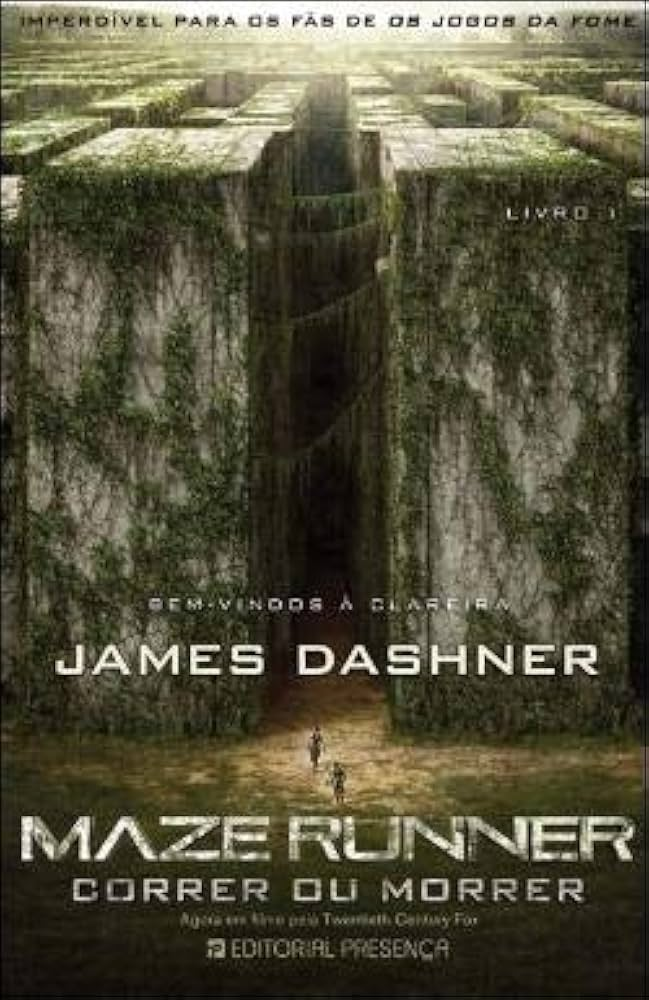

|
Suzanne Collins |
 |
Na região antigamente conhecida como América do Norte, a Capital de Panem controla 12 distritos e os
força a escolher um garoto e uma garota, conhecidos como tributos, para competir em um evento anual televisionado. Todos os cidadãos assistem aos temidos jogos, no qual os jovens lutam até a morte, de modo que apenas um saia vitorioso. A jovem Katniss Everdeen, do Distrito 12, confia na habilidade de caça e na destreza com o |
 |
james Dashner |
|  | Em um futuro apocalíptico, o jovem Thomas é escolhido para enfrentar o sistema. Ele acorda dentro de um escuro elevador em movimento e não consegue se lembrar nem de seu nome. Na comunidade isolada em que foi abandonado, Thomas conhece outros garotos que passaram pela mesma situação. Para conseguir escapar, ele precisa descobrir os sombrios segredos guardados em sua mente e correr muito. |